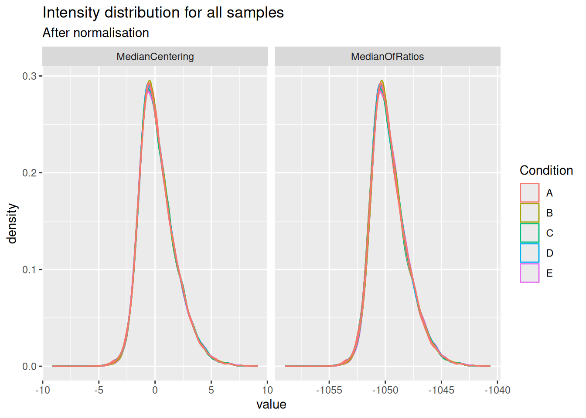
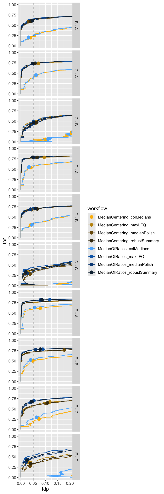
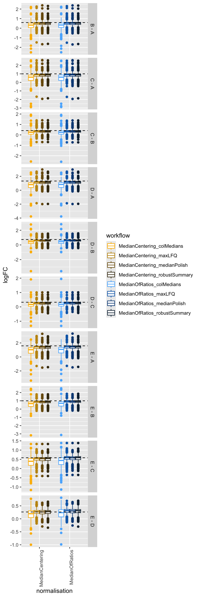

library("msqrob2")
library("data.table")
library("dplyr")
library("tidyr")
library("ggplot2")
library("patchwork")
library("tidyverse")4 Optimisation of a data analysis workflow
In the previous chapter we have seen how to benchmark the data analysis performance when starting from different types of data. This chapter presents how to assess the impact of different methods for the same sequence of steps on the same data, effectively optimising the workflow.
To illustrate the approach, we will again use the data set by (Shen et al. 2018), a spike-in data set with known ground truth. The optimisation focuses on two steps: we will explore different methods for normalisation and summarisation.
Important: the first sections of the chapter are again meant for advanced users that are familiar with R scripting. Novice users interested in the key messages and best practices can refer to the take home message section.
4.1 Load packages
We load the msqrob2 package, along with additional packages for data manipulation and visualisation.
We also configure the parallelisation framework.
library("BiocParallel")
register(SerialParam())4.2 Data
We will reuse the data by (Shen et al. 2018) as in Chapter 1 and Chapter 3. The data were reanalysed using MaxQuant, and we will use start from the evidence file as suggested in the previous chapter.
4.2.1 PSM table
We here retrieve the evidence file containig the PSM table.
TODO: put data on Zenodo or MsDataHub, and update code below
# myurl <- "https://github.com/statOmics/MSqRobSumPaper/raw/refs/heads/master/spikein/data/maxquant/evidence.zip"
# download.file(myurl,"data/sticker2020/evidence.zip", method = "curl", extra = "-L")
# unzip("data/sticker2020/evidence.zip", exdir = "data/sticker2020/")
evidenceFile <- "data/sticker2020/evidence.txt"We also load the annotation table) that has been generated by the authors. Since the evidence, peptides and protein-groups tables all contain the same samples, the annotation table will be shared across the MaxQuant data tables.
annotFile <- "data/sticker2020/sticker2020_annotation.csv"
coldata <- read.csv(annotFile)We retrieve all the E. coli protein identifiers to later identify which proteins are known to be differentially abundant (E. coli proteins) or constant (human) across condition.
library("BiocFileCache")
bfc <- BiocFileCache()
ecoli <- bfcrpath(bfc, "https://raw.githubusercontent.com/statOmics/MSqRobSumPaper/refs/heads/master/spikein/data/fasta/ecoli_up000000625_7_06_2018.fasta")
ecoli <- readLines(ecoli)
ecoli <- ecoli[grepl("^>", ecoli)]
ecoli <- gsub(">sp\\|(.*)\\|.*", "\\1", ecoli)4.2.2 Convert to QFeatures
We combine the evidence file with the annotation table into a QFeatures object.
spikein <- fread(evidenceFile, check.names = TRUE)
coldata$runCol <- coldata$Raw.file
(spikein <- readQFeatures(
spikein, colData = coldata, runCol = "Raw.file",
quantCols = "Intensity"
))An instance of class QFeatures (type: bulk) with 20 sets:
[1] B03_02_150304_human_ecoli_B_3ul_3um_column_95_HCD_OT_2hrs_30B_9B: SummarizedExperiment with 40057 rows and 1 columns
[2] B03_03_150304_human_ecoli_C_3ul_3um_column_95_HCD_OT_2hrs_30B_9B: SummarizedExperiment with 41266 rows and 1 columns
[3] B03_04_150304_human_ecoli_D_3ul_3um_column_95_HCD_OT_2hrs_30B_9B: SummarizedExperiment with 41396 rows and 1 columns
...
[18] B03_19_150304_human_ecoli_B_3ul_3um_column_95_HCD_OT_2hrs_30B_9B: SummarizedExperiment with 39388 rows and 1 columns
[19] B03_20_150304_human_ecoli_A_3ul_3um_column_95_HCD_OT_2hrs_30B_9B: SummarizedExperiment with 39000 rows and 1 columns
[20] B03_21_150304_human_ecoli_A_3ul_3um_column_95_HCD_OT_2hrs_30B_9B: SummarizedExperiment with 38783 rows and 1 columns We now have a QFeatures object with 20 sets, as many as the number of MS runs. We cannot yet join the sets together since we don’t have a specific feature identifier and the data does not fullfill to the modelling assumptions, yet. We will therefore preprocess the data first.
4.3 Data preprocessing
We will follow the same data preprocessing workflow as in the previous chapter. We will however explore different normalisation strategies and summarisation methods.
- Encoding missing values as zeros.
spikein <- zeroIsNA(spikein, names(spikein))- Log2 transforming
inputNames <- names(spikein)
logNames <- paste0(inputNames, "_log")
spikein <- logTransform(spikein, inputNames, name = logNames, base = 2)- Keeping only the most intense PSM per ion (see here for a step-by-step explanation of the code). Upon this filtering every feature is unique to a ion identifier (peptide sequence + charge), and we hence can join sets using that identifier.
for (i in logNames) {
rowdata <- rowData(spikein[[i]])
rowdata$ionID <- paste0(rowdata$Sequence, rowdata$Charge)
rowdata$value <- assay(spikein[[i]])[, 1]
rowdata <- data.frame(rowdata) |>
group_by(ionID) |>
mutate(psmRank = rank(-value))
rowData(spikein[[i]])$psmRank <- rowdata$psmRank
rowData(spikein[[i]])$ionID <- rowdata$ionID
}
spikein <- filterFeatures(spikein, ~ psmRank == 1, keep = TRUE)
spikein <- joinAssays(spikein, logNames, "ions_log", "ionID")- Feature filtering
spikein <- filterFeatures(
spikein, ~ Proteins != "" & ## Remove failed protein inference
!grepl(";", Proteins) & ## Remove protein groups
Reverse != "+" & ## Remove decoys
(Potential.contaminant != "+") ## Remove contaminants
)- Missing value filtering
n <- ncol(spikein[["ions_log"]])
spikein <- filterNA(spikein, i = "ions_log", pNA = (n - 4) / n)4.3.1 Explore normalisation methods
Remember that normalisation aims to correct for systematic fluctuations across samples, as illustrated by plotting the intensity distribution for each sample. The method applies the following operation on each sample \(i\) across all PSMs \(p\):
\[ y_{ip}^{\text{norm}} = y_{ip} - \hat{\mu}_i \]
with \(\mathbf{y}\) the log intensities and _i$ the norm factor.
We previously showed that the Median of Ratios (popularized by DESeq2) method could (partly) correct for these systematic fluctuations. We abbreviate this method as the MedianOfRatios method. The norm factor used by MedianOfRatios is estimated as follows:
\[ \hat{\mu}^\text{MedianOfRatios}_i = \text{median}(y_{i\cdot} - \frac{1}{n}\sum\limits_{i = 1}^ny_{i\cdot}) \]
We create a new set called ions_norm_MedianOfRatios that contains the values normalised by MedianOfRatios.
pseudoRef <- rowMeans(assay(spikein[["ions_log"]]), na.rm = TRUE)
nfLog <- sweep(assay(spikein[["ions_log"]]), MARGIN = 1, pseudoRef) |>
colMedians(na.rm = TRUE)
spikein <- sweep(
spikein, MARGIN = 2, STATS = nfLog,
i = "ions_log", name = "ions_norm_MedianOfRatios"
)However, other methods exist, median centering being the most popular. Median centering normalisation subtracts the median intensity of each sample from all its measurements. A key assumption for this method is that the majority of proteins are not differentially abundant. We abbreviate this method as the MedianCentering method. The norm factor used by MedianOfRatios is estimated as follows:
\[ \hat{\mu}^\text{MedianCentering}_i = \text{median}(y_{i\cdot}) \]
We create a new set called ions_norm_MedianCentering that contains the values normalised by MedianCentering.
spikein <- normalize(
spikein, method = "center.median", i = "ions_log",
name = "ions_norm_MedianCentering"
)We visually explore the impact of the normalisation methods on the intensity distribution for each sample.
longForm(
spikein[, , c("ions_norm_MedianOfRatios", "ions_norm_MedianCentering")],
colvars = c("Concentration", "Condition")
) |>
data.frame() |>
mutate(normalisation = sub("ions_norm_", "", assay)) |>
ggplot() +
aes(x = value,
colour = Condition,
group = colname) +
geom_density() +
facet_grid(~ normalisation, scales = "free") +
labs(title = "Intensity distribution for all samples",
subtitle = "After normalisation")
Both the median centering and median or ratio normalisation achieve similar alignment of the intensity distributions. Although they appear visually similar, we will see later that they can lead to different results in statistical inference.
Notice that the QFeatures object contains two diverging assays, one for each normalisation method.
plot(spikein, interactive = TRUE)4.3.2 Explore summarisation methods
With the data normalised, the next step is to summarise ion-level intensities to obtain protein-level expression values. In this chapter, we will compare three summarisation methods:
- Robust summarisation (Sticker et al. 2020), as we described in a previous chapter.
- Median summarisation, which calculates the median of the log-transformed intensities of all peptides belonging to a protein for each sample separately. While robust to outliers, it can be heavily influenced by inconsistent peptide identification across samples.
- Median polish summarisation, a non-parametric iterative method that decomposes the peptide-by-sample intensity matrix into peptide effects (rows) and sample effects (columns). The resulting column effects are used as the summarised protein abundances. It is robust and much faster than model-based approaches.
All these summarisation methods are available in MsCoreUtils and can be integrated feeded to QFeatures.
library("MsCoreUtils")
summMethods <- c(
robustSummary = MsCoreUtils::robustSummary,
colMedians = colMedians,
medianPolish = MsCoreUtils::medianPolish
)We will therefore create a loop that iterates over the normalised data sets and over the summarisation methods.
for (i in c("ions_norm_MedianOfRatios", "ions_norm_MedianCentering")) {
for (j in names(summMethods)) {
newSet <- paste0("proteins_", sub("ions_norm_", "", i), "_", j)
spikein <- aggregateFeatures(
spikein, i = i,
name = newSet,
fcol = "Proteins",
fun = summMethods[[j]],
na.rm = TRUE
)
}
}The data processing is now complete. The QFeatures object now contains a workflow of assays, from input PSMs to normalised and summarised proteins. The data set contains 2 sets obtained using 2 normalisation methods, and each normalised set has been summarised with 3 different methods.
plot(spikein, interactive = TRUE)4.4 Data modelling
The preprocessed data for all 6 workflows1 can now be modelled to assess our research hypothesis using the same approach, as described in the basics chapter2. Remember, the central research question is to “prioritise proteins that have been spiked in across the conditions.” Since we know the ground truth, we can assess how accurately the model estimates the fold changes between spike-in conditions, and hence which preprocessing workflow leads to the best results.
We loop over the different assays to fit the model for the different preprocessed sets3. Recall that the model estimation results are stored in the rowData of each set.
proteinSets <- grep("proteins_", names(spikein), value = TRUE)
for (i in proteinSets) {
spikein <- msqrob(
spikein, i = i, formula = ~ Condition, ridge = TRUE, robust = TRUE
)
}We enable M-estimation (robust = TRUE) for improved robustness against outliers and ridge regression (ridge = TRUE) to stabilise parameter estimates. While the stabilising effects of ridge regression are most pronounced in complex models with many parameters, we enable it here to ensure robust parameter estimation and for consistency with more advanced workflows.
We can create our contrasts of interest and perform hypothesis testing.
allContrasts <- createPairwiseContrasts(
~ Condition, colData(spikein), var = "Condition", ridge = TRUE
)
L <- makeContrast(
allContrasts,
c("ridgeConditionB", "ridgeConditionC", "ridgeConditionD", "ridgeConditionE")
)
inferences <- lapply(proteinSets, function(i) {
spikein <- hypothesisTest(spikein, i, contrast = L)
inference <- msqrobCollect(spikein[[i]], L)
inference$method <- i
inference
})
inferences <- do.call(rbind, inferences)We also add the information whether a protein is differentially abundant or not, since all E. Coli proteins are known to be spiked in different concentrations.
inferences <- mutate(
inferences,
isEcoli = feature %in% ecoli,
normalisation = sub("(.*)_(.*)_(.*)", "\\2", method),
summarisation = sub("(.*)_(.*)_(.*)", "\\3", method),
contrast = gsub("ridgeCondition", "", contrast),
contrast = gsub("^([B-E])$", "\\1 - A", contrast),
)4.5 Performance Evaluation
Since we have ground truth information (i.e., we know which proteins are from E. coli and should be differentially abundant), we can objectively evaluate the performance of each workflow. Similarly to the previous chapter, we will assess the number of true positives (TP, that are correctly identified E. coli proteins) and false positives (FP, that are human proteins incorrectly identified as significant), the false discovery proportion (FDP), the accuracy of the estimated log2 fold changes (LFC), and finally, the overall performance using True Positive Rate (TPR) versus False Discovery Proportion (FDP) curves.
Before delving into the performance plot, we will first create a colour scheme in order to compare the different workflows. We will assign a colour to each combination of normalisation and summarisation method.
inferences <- mutate(
inferences,
workflow = paste0(normalisation, "_", summarisation)
)
colours <- c(
MedianCentering_colMedians = "#fcba03",
MedianCentering_medianPolish = "#c29310",
MedianCentering_robustSummary = "#423512",
MedianOfRatios_colMedians = "#5bb4fc",
MedianOfRatios_medianPolish = "#0b69b5",
MedianOfRatios_robustSummary = "#0f2a40"
)4.5.1 TP and FP at 5% FDR
We will first construct the table with TPs and FPs obtained from each data modelling approach for each comparison.
tpFpTable <- group_by(inferences, normalisation, workflow, contrast) |>
filter(adjPval < 0.05) |>
summarise("True Positives" = sum(isEcoli),
"False Positives" = sum(!isEcoli),
FDP = mean(!isEcoli)) |>
pivot_longer(cols = c("True Positives", "False Positives"),
names_to = "metric", values_to = "count")We then plot the table as a bar plot, facetting for every comparison.
ggplot(tpFpTable) +
aes(
x = normalisation, y = count,
fill = workflow
) +
geom_bar(
stat = "identity", position = position_dodge(preserve = "single"),
color = "black"
) +
facet_grid(contrast ~ metric, scales = "free") +
scale_fill_manual(values = colours) +
theme(axis.text.x = element_text(angle = 90, hjust = 1))
We see that, while it has minimal impact on the TPs, the median centering normalisation approach increases the number of FPs for some comparisons (E-A and E-B). We therefore suggest to use the Median of ratio’s normalisation method.
More importantly, we see that summarising using the column median leads to poor performance (irrespective of the normalisation method used) as these workflow identify less TPs. This can be easily explained as the summarisation step in this workflow does not account for the fact that different PSMs are often observed for a protein in the different samples and that their corresponding intensities largely fluctuate according to the differences in the PSM characteristics. The median polish and the robust summary summarisation show similar performance. Note, however, that median polish is computationally less demanding.
4.5.2 TPR-FDP curves
We generate the TPR-FDP curves to assess the performance of the different workflows to prioritise differentially abundant proteins. Again, these curves are built using the ground truth information about which proteins are differentially abundant (spiked in) and which proteins are constant across samples. We create two functions to compute the TPR and the FDP.
computeFDP <- function(pval, tp) {
ord <- order(pval)
fdp <- cumsum(!tp[ord]) / 1:length(tp)
fdp[order(ord)]
}
computeTPR <- function(pval, tp, nTP = NULL) {
if (is.null(nTP)) nTP <- sum(tp)
ord <- order(pval)
tpr <- cumsum(tp[ord]) / nTP
tpr[order(ord)]
}We apply these functions and compute the corresponding metric using the statistical inference results and the ground truth information.
We also highlight the observed FDP at a 5% FDR threshold.
workPoints <- group_by(performance, summarisation, normalisation, contrast) |>
filter(adjPval < 0.05) |>
slice_max(adjPval)We can now generate the plot4.
ggplot(performance) +
aes(
y = fdp,
x = tpr,
colour = workflow
) +
geom_line() +
geom_point(data = workPoints, size = 3) +
geom_hline(yintercept = 0.05, linetype = 2) +
facet_grid(contrast ~ .) +
coord_flip(ylim = c(0, 0.2)) +
scale_colour_manual(values = colours)
Again, we also observe a benefit of the MedianOfRatios normalisation, which seems to improve the FDR control accross the board5 as well as the sensitivity in contrasts involving the higher spike-in conditions.
TPR-FDP curves also clearly indicate a suboptimal performance (lower sensitivity at the same false discovery proportion) of median summarisation.
4.5.3 Fold change boxplots
Finally, we estimate the accuracy and precision of the log2-fold changes using boxplots. We first create a table with the ground truth information from the spike-in experiment.
realLogFC <- data.frame(
expectedLogFC = t(L) %*% lm(log2(Concentration) ~ Condition, colData(spikein))$coef[-1]
)
realLogFC$contrast <- gsub("ridgeCondition","",colnames(L))
realLogFC$contrast <- gsub("^([B-E])$", "\\1 - A", realLogFC$contrast)We now plot the estimated log2-fold changes, focusing on the differentially abundant proteins (E. Coli proteins). The dashed line represents the true log2-fold change for each comparison.
filter(inferences, isEcoli) |>
ggplot() +
aes(
y = logFC,
x = normalisation,
colour = workflow
) +
geom_boxplot() +
facet_grid(contrast ~ ., scales = "free") +
geom_hline(data = realLogFC, aes(yintercept = expectedLogFC),
linetype = "dashed") +
scale_colour_manual(values = colours) +
theme(axis.text.x = element_text(angle = 90, hjust = 1))
The plots show that median summarisation produces biased fold change estimates, again because it does not account for the differences in the characteristics of the PSMs that are observed in the different samples.
4.6 Conclusion
In this chapter, we objectively compared different normalisation and summarisation strategies using a spike-in dataset with known ground truth.
Normalisation is critical: The performance evaluation clearly shows that the choice of normalisation method has a significant impact on the results. Workflows using the median-of-ratios normalisation consistently outperformed those using simple median centering. They yielded more true positives, better control of the false discovery proportion, and more accurate log2-fold change estimates, particularly for smaller fold changes.
Column median summarisation is suboptimal: we found that summarising peptide data to protein intensities using the column (sample) median leads to reduced sensitivity (low True Positive Rate) and specificity (low False Discovery Proportion), but also to lower accuracy (i.e. the estimated log2-fold changes are further from the true value on average) and precision (the estimations are more spread around the average estimation).
Median polish and robust summary provide comparable performance: the TPR-FDP curves show that the pipelines incorporating robust summarisation and median polish are consistently closer to the ideal top-left corner, with only subtle differences between the two approaches. This indicates that explicitly modelling peptide-specific effects and down-weighting outliers leads to more reliable protein-level quantification and inference. Note that median polish summarisation is computationally less demanding and that we could not find a benefit in performance for robust summarisation that justifies its additional computational overhead.
Based on this comprehensive evaluation, the recommended pipeline for this type of dataset is the median-of-ratios normalisation followed by median polish summarisation. This combination provided the best performance in terms of computational complexity, accuracy, sensitivity and FDR control, demonstrating the strength of msqrob2 in identifying truly differentially abundant proteins while controlling for false discoveries.
TODO discuss that data analysis optimisation is data set dependent, and other conclusion may be reached on other datasets?
There are 2 normalisaion methods * 3 summarisation methods.↩︎
Note that while we changed the preprocessing workflow, the sources of variation and the model to estimate remain the same as in Chapter 1.↩︎
Those sets that start with
proteins_.↩︎Note that the code to build the TPR-FDP curves is identical to the workflow in the previous chapter on data benchmarking.↩︎
the dots indicating the sensitivity and FDP when using a 5% FDR cut-off are much closer to the empirical 5% FDP↩︎